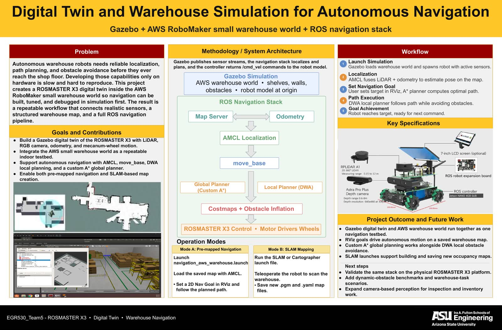
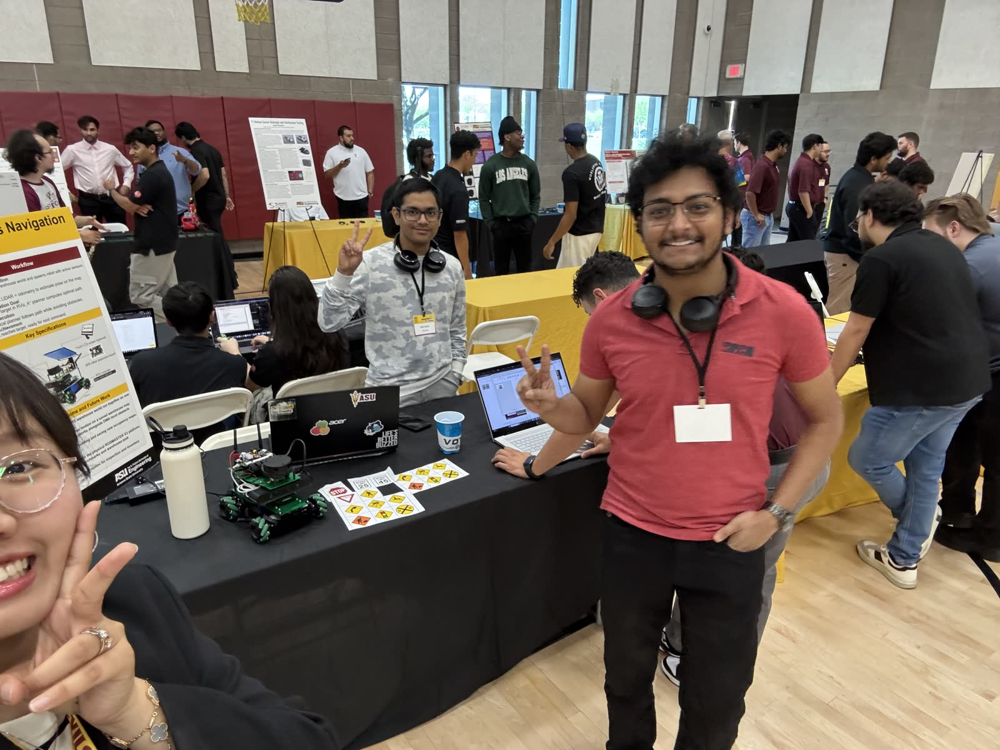
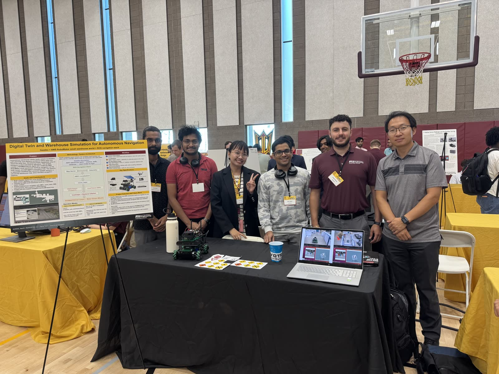

A Warehouse That Only Exists in Gazebo, Driven by a Robot That Doesn't Know the Difference
A complete autonomous navigation stack for the ROSMASTER X3 mecanum rover, built inside a digital twin of the AWS RoboMaker small warehouse. URDF robot model with simulated 2D LiDAR and RGB camera, AMCL particle-filter localization, a custom A* global planner feeding move_base, DWA local obstacle avoidance over layered costmaps, and SLAM via gmapping or Cartographer to build the map in the first place — plus marker-based sign recognition that makes the robot stop for red and slow down for yellow.
Model the robot, then model the building around it.
The project ships as two ROS packages that drop into an existing yahboomcar workspace. aws-robomaker-small-warehouse-world supplies the environment — a Gazebo world with shelving, walls, and 20+ 3D warehouse object models, giving a repeatable testbed where the same navigation run can be re-executed until the numbers mean something. digital_twin_description holds the other half: the ROSMASTER X3 URDF with its 360° planar LiDAR and RGB camera, the navigation launch files, the custom A* planner, and the pre-built warehouse map.
The X3 is a mecanum-wheeled platform, which matters more than it sounds: the drivetrain can translate laterally without rotating, so the planner isn't restricted to differential-drive arc motion when threading a 24 cm footprint between shelf legs.
| Platform | Value |
|---|---|
| Footprint | 24 cm × 24 cm |
| Max linear speed | 0.3 m/s |
| Max lateral speed | 0.2 m/s (mecanum) |
| Max angular speed | 1.0 rad/s |
| Payload | 10 kg |
| Sensor | Spec |
|---|---|
| LiDAR type | 2D planar scanner, 360° FOV |
| LiDAR range | 0.35 – 12 m @ 10 Hz |
| Camera | 640 × 480 · 30 FPS · 62° FOV |
The twin models real hardware, part for part: an RPLIDAR A1 2D 360° scanner, an Astra Pro Plus depth camera (0.6–8 m range, 640×480 @ 30 FPS), a Jetson Nano 4GB running the ROS controller on a robot expansion board, and an optional 7-inch LCD — which is what makes the "validate on the physical X3" next step a port rather than a rewrite.
move_base in the middle, everything else feeding it.
The stack is the classic ROS navigation pipeline with one part swapped out for
hand-written code. AMCL fuses /scan against wheel
/odom with a particle filter to keep the robot localized on the static
/map. move_base takes a goal — a 2D Nav Goal click in
RViz — and orchestrates the two planning layers. The custom A* global
planner searches the whole warehouse for a route; DWA samples
local velocity commands each cycle to follow it while dodging whatever the map never
knew about. Out the bottom: /cmd_vel.
goal → move_base → A* global → plan → DWA local → /cmd_vel
costmaps: global 1 Hz full map · local 5 Hz 6 × 6 m rolling window
The two costmaps run at deliberately different rates because they answer different questions. The global one is asked "is there a route at all?" once a second across the entire map with obstacle inflation baked in. The local one is asked "what is about to hit me?" five times a second inside a 6 × 6 m window centered on the robot. An inflation radius of 25 cm around every obstacle is what keeps a 24 cm robot from clipping a shelf corner it technically had room for.
| Navigation parameter | Value |
|---|---|
| Safety inflation radius | 0.25 m |
| Obstacle detection range | 3.5 m |
| Goal position tolerance | 0.15 m |
| Goal angle tolerance | 15° |
| Global costmap update | 1 Hz · full map |
| Local costmap update | 5 Hz · 6 m × 6 m |
Tuning levers: raise inflation_radius in costmap_common_params.yaml (0.25 → 0.35) for wider clearance; cut max velocities in dwa_local_planner_params.yaml for a more cautious robot.
Two ways to learn a building you've never seen.
Pre-mapped navigation is the deployed mode, but the map has to come from somewhere. The
stack supports both gmapping (particle-filter SLAM) and
Google Cartographer — the recommended path — launched against the same
warehouse world. Coverage is driven manually with
teleop_twist_keyboard until the occupancy grid closes up, then the map
is written out to .pgm + .yaml with map_saver.
Cartographer has one non-obvious step: the trajectory must be finished
(/finish_trajectory 0) before saving, or the final optimization never runs.
$ rosservice call /finish_trajectory 0 // let the loop closures settle first
$ rosrun map_server map_saver -f my_custom_map
$ roslaunch digital_twin_description navigation_aws_warehouse.launch // RViz, pre-mapped, ready for goals
A warehouse robot that reads the signs.
Navigation gets you to a pose. Operating inside a shared warehouse needs more than that, so the camera stream drives marker-based sign recognition layered on top of move_base: a red stop marker halts navigation until the path clears, and a yellow warning marker drops the robot into a cautious, reduced-speed mode while it scans for hazards. The rule the site demonstrated is the one that matters operationally — perception can veto the planner, never the other way around.
What the twin actually delivered.
Goal-directed navigation succeeded in 95%+ of simulated runs, arriving within ±15 cm and ±15° of the commanded pose — tight enough for shelf-adjacent warehouse tasks, and exactly the tolerance the costmap goal checker was configured to enforce. Localization held at 10 Hz, planning cycled at 5 Hz, and the DWA layer recovered from injected obstacles without ever needing an operator.
| Metric | Result |
|---|---|
| Navigation accuracy | ±15 cm, ±15° |
| Goal success rate | 95%+ in simulation |
| Obstacle detection range | 0.35 – 12 m (LiDAR) |
| Maximum speed | 0.3 m/s linear · 0.2 m/s lateral |
| Localization update rate | 10 Hz |
| Path planning frequency | 5 Hz |
Reported on the team project site; results page last updated May 1, 2026.



What this project proves.
A digital twin is a measurement instrument, not a demo. The value of the AWS warehouse world isn't that it looks like a warehouse — it's that the same goal can be commanded a hundred times under identical conditions, which is the only way "95% success" becomes a number instead of an impression. Writing the global planner changes what you understand. Dropping a custom A* into move_base's plugin interface forces the costmap, the inflation layer, and the plan-to-controller handoff to stop being configuration and start being code. And the layers must disagree at different speeds: a 1 Hz global route and a 5 Hz local reaction is not redundancy, it's a deliberate split between the question of where to go and the question of what's in the way right now.
Next phases identified by the team: full hardware validation of the stack on the physical X3, multi-robot fleet coordination, richer camera-based perception for warehouse tasks, and benchmarking in a real facility rather than a modeled one.